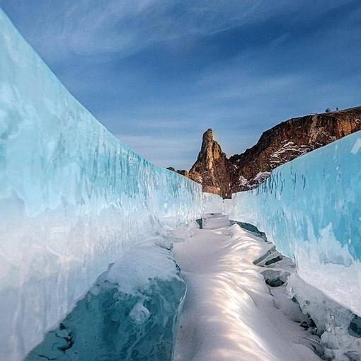

...Красота в мелочах...
Байкал зимой — это вообще что-то с чем-то.
Он другой. Совершенно инопланетный. Вода замерзает и превращается не просто в лёд, а в огромное, идеально прозрачное стекло. Толщина льда на Байкале может достигать полутора-двух метров.
Смотришь вниз — а там на несколько метров вглубь всё видно, как в аквариуме. В одном месте лёд гладкий и черный, а в другом — нагромождение бирюзовых глыб, торосов. И он постоянно гудит, трещит, поёт свои ледяные песни.
Чувствуешь, что под ногами не просто лёд, а живое, дышащее озеро.
вернуться назад